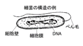
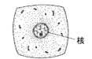
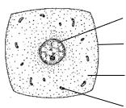
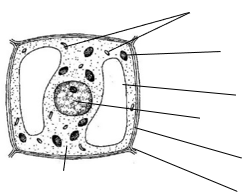
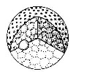
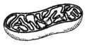
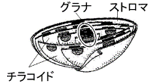
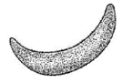

細胞の大きさ→
μm～μm原核細胞の大きさは1μm～10μm, 真核細胞の大きさは5μm～100μm 1μmマイクロメータは、1mmの100万分の1の大きさです。
顕微鏡で見ることができる。生物は原核細胞→真核細胞と進化しました。

【原核細胞の例】大腸菌, 納豆菌, 乳酸菌, コレラ菌や
類や (シアノバクテリア)に見られます。


| 図 | 名称 | 内容・働き |
|---|---|---|
 | 内部にはDNAとタンパク質からなる染色体と核小体からなりたちます。核膜でおおわれていますが, 核膜孔という穴があり物質が出入りします。 | |
 | を行い, 生命活動に必要なエネルギーを取り出します。 | |
 | クロロフィルなどの色素を含み, を行います。 | |
 | 成長した植物細胞で発達します。アントシアンを含み, 水分, 栄養分, 老廃物を貯蔵します。 |